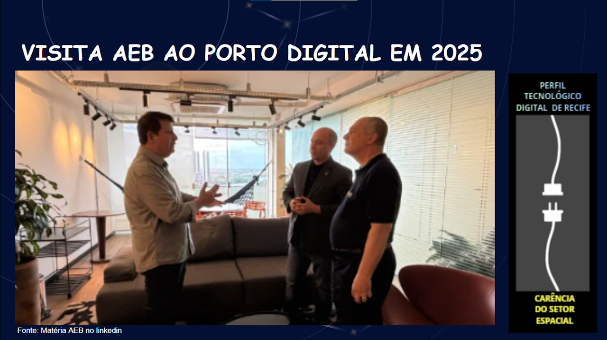
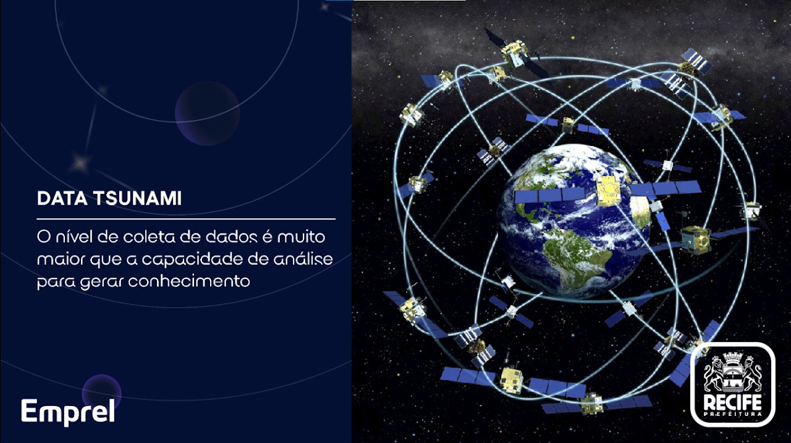
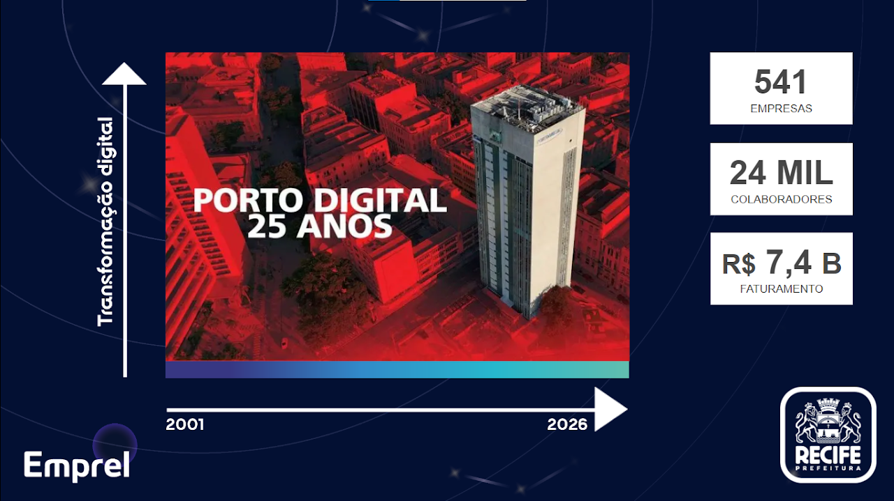
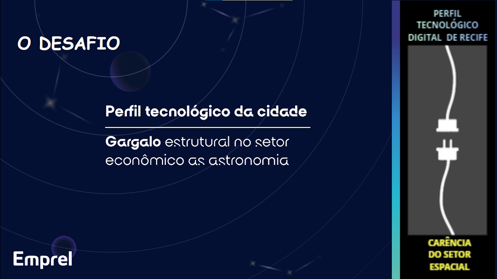
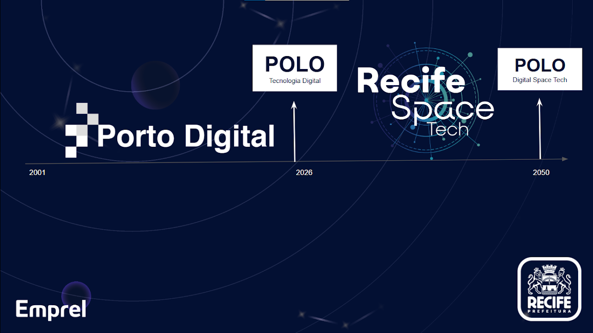

Arena GO Recife Space Tech no REC'N'PLAY
Consulte as oficinas da Carreta Smart Lab, os painéis da ACP e os palestrantes confirmados.

Em 2025, a Agência Espacial Brasileira visitou o Porto Digital para falar de projetos atuais e futuros.

Um dos principais desafios do setor espacial é justamente tecnologias digitais e ciências de dados.

Recife é o maior parque tecnológico em tecnologias digitais da América Latina.

Queremos conectar o perfil tecnológico da cidade com a economia espacial para ajudar na solução dos desafios.

A visão de futuro é Recife como uma plataforma Global de Transformação Digital no setor Espacial até 2050.